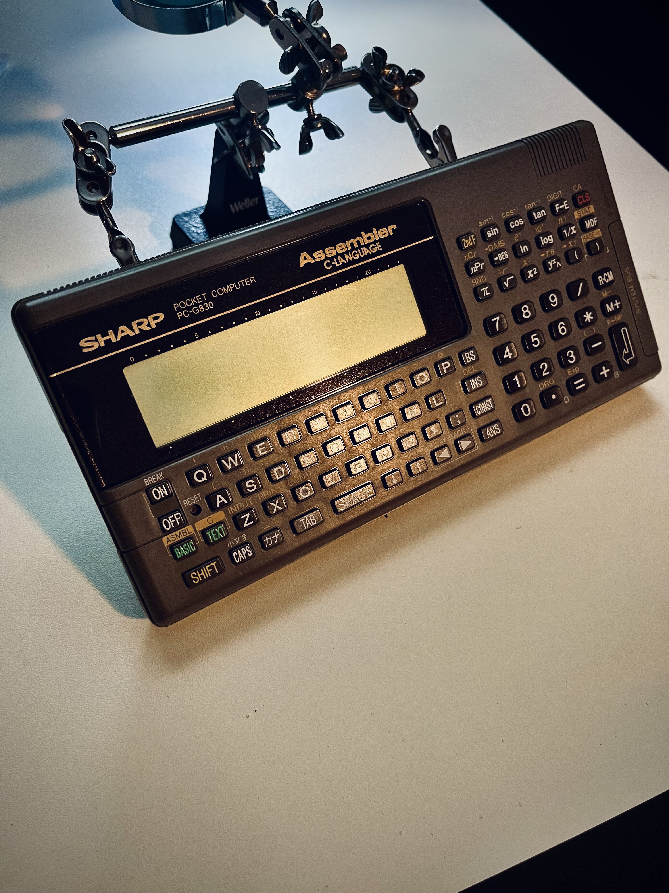

David Lowry's Portfolio

Sharp PC-G830 Pocket Computer
I have spent many hours programming on the Sharp PC-G830 in my spare time. Featuring a 256K ROM and 32K of RAM it is
surprisingly easy to use. It uses BASIC, C, CASL and Z80 Assembly language to program it. The main programs I have made
on it are games, since the practical use of this system is limited. Currently I am working on a procedurally generated
dungeon crawler rogue-like. I am programming it in assembly language since the memory is too limited to use anything else.
If memory becomes too much of an issue I will have to write down the programs by hand and poke in the machine code using
BASIC. I dearly hope this does not happen! :-)